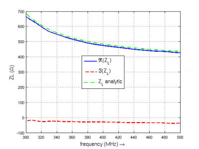
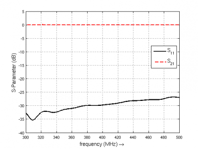

Tutorial: Circular Waveguide
From openEMS
- Download the latest matlab file using gitweb: Circ_Waveguide.m
- Simulation Time: ~ 7 min for a 2m long waveguide
We will cover in this tutorial:
- setting up a cylindrical mesh
- setup a mode profile excitation
- create voltage and current probes using the mode profile
- calculate the waveguide impedance and S-Parameter
Contents |
First Steps
- Install and verify your openEMS installation: Tutorial: First Steps
- You may have a look at the rectangular waveguide example which is mostly identical to this tutorial
Matlab Simulation Script
- Start the script within an empty environment:
close all clear clc
- Setup the simulation parameters
physical_constants; unit = 1e-3; %drawing unit in mm % waveguide dimensions length = 2000; rad = 350; %waveguide radius in mm % frequency range of interest f_start = 300e6; f_stop = 500e6; mesh_res = [10 2*pi/49.999 10]; %targeted mesh resolution
- Set cylindrical FDTD parameters and the Gaussian excitation pulse
FDTD = InitFDTD('EndCriteria',1e-4,'CoordSystem',1); FDTD = SetGaussExcite(FDTD,0.5*(f_start+f_stop),0.5*(f_stop-f_start)); % boundary conditions BC = [0 0 0 0 3 3]; %pml in pos. and neg. z-direction FDTD = SetBoundaryCond(FDTD,BC);
- Define the cylindrical homogeneous mesh
CSX = InitCSX('CoordSystem',1); % init a cylindrical mesh mesh.r = SmoothMeshLines([0 rad], mesh_res(1)); %mesh in radial direction mesh.a = SmoothMeshLines([0 2*pi], mesh_res(2)); % mesh in azimuthal dir. mesh.z = SmoothMeshLines([0 length], mesh_res(3)); CSX = DefineRectGrid(CSX, unit,mesh);
- Apply waveguide ports
start=[mesh.r(1) mesh.a(1) mesh.z(8)]; stop =[mesh.r(end) mesh.a(end) mesh.z(15)]; [CSX, port{1}] = AddCircWaveGuidePort( CSX, 0, 1, start, stop, rad*unit, 'TE11', 0, 1); start=[mesh.r(1) mesh.a(1) mesh.z(end-13)]; stop =[mesh.r(end) mesh.a(end) mesh.z(end-14)]; [CSX, port{2}] = AddCircWaveGuidePort( CSX, 0, 2, start, stop, rad*unit, 'TE11');
- Define a dump box using the HDF5 file format
CSX = AddDump(CSX,'Et','FileType',1,'SubSampling','4,4,4'); start = [mesh.r(1) mesh.a(1) mesh.z(1)]; stop = [mesh.r(end) mesh.a(end) mesh.z(end)]; CSX = AddBox(CSX,'Et',0 , start,stop);
- Save & Run the simulation
Sim_Path = 'tmp'; Sim_CSX = 'circ_wg.xml'; [status, message, messageid] = rmdir(Sim_Path,'s'); [status, message, messageid] = mkdir(Sim_Path); WriteOpenEMS([Sim_Path '/' Sim_CSX],FDTD,CSX); RunOpenEMS(Sim_Path, Sim_CSX)
Post-Processing
- Calculate s-parameters and waveguide impedance
freq = linspace(f_start,f_stop,201); port = calcPort( port, Sim_Path, freq); s11 = port{1}.uf.ref./ port{1}.uf.inc; s21 = port{2}.uf.ref./ port{1}.uf.inc; ZL = port{1}.uf.tot./port{1}.if.tot;
- Plot S-Parameters
figure plot(freq*1e-6,20*log10(abs(s11)),'k-','Linewidth',2); xlim([freq(1) freq(end)]*1e-6); grid on; hold on; plot(freq*1e-6,20*log10(abs(s21)),'r--','Linewidth',2); l = legend('S_{11}','S_{21}','Location','Best'); set(l,'FontSize',12); ylabel('S-Parameter (dB)','FontSize',12); xlabel('frequency (MHz) \rightarrow','FontSize',12);
- Compare analytic and numerical wave-impedance
figure plot(freq*1e-6,real(ZL),'Linewidth',2); hold on; grid on; plot(freq*1e-6,imag(ZL),'r--','Linewidth',2); plot(freq*1e-6,port{1}.ZL,'g-.','Linewidth',2); ylabel('ZL (\Omega)','FontSize',12); xlabel('frequency (MHz) \rightarrow','FontSize',12); xlim([freq(1) freq(end)]*1e-6); l = legend('\Re(Z_L)','\Im(Z_L)','Z_L analytic','Location','Best'); set(l,'FontSize',12);
Results
|

|

|
Modifications
- Try different/multiple modes for excitation/detection
- Add an unsymmetrical dielectric material load to see a mode-conversion (multiple mode detection necessary)
- Try adding a periodic dielectric material to see a frequency selective reflection (Bragg reflections)

{kind=link}
{kind=link}